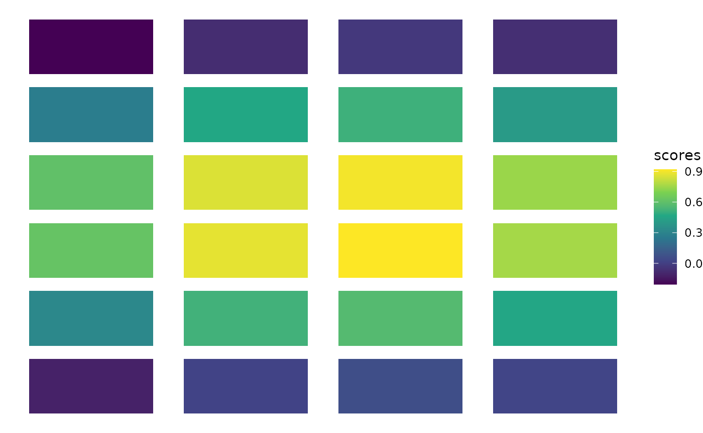
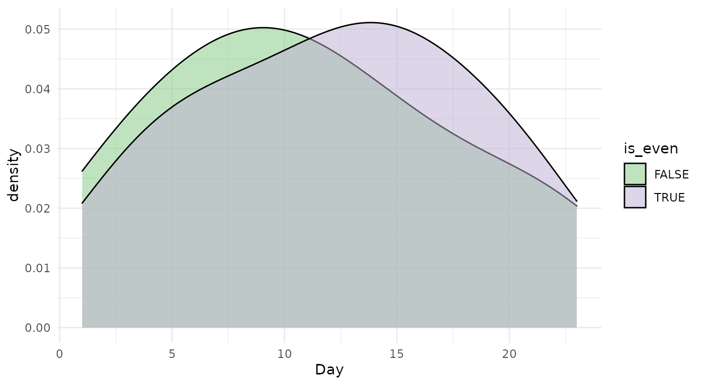
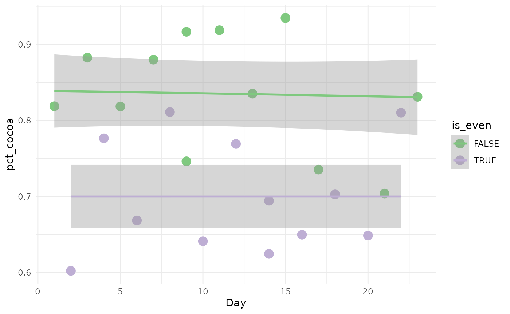
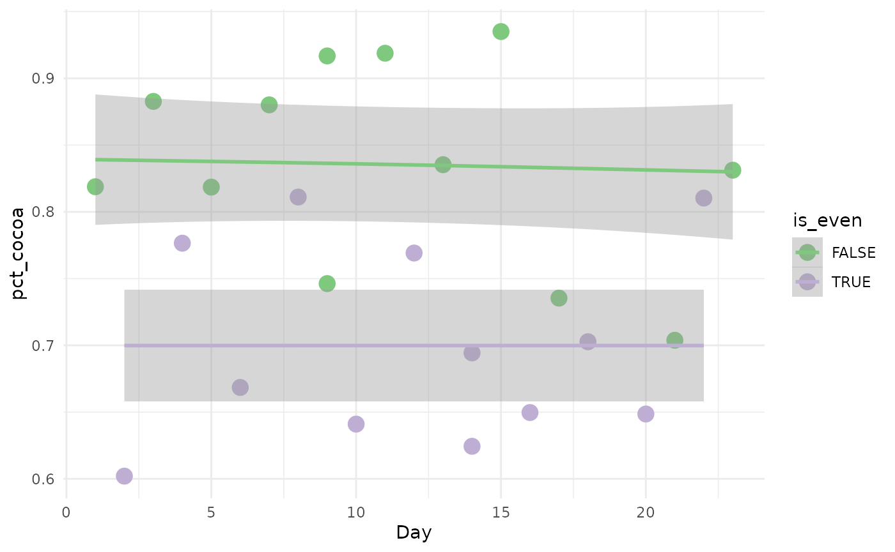

adventExample.RmdIn single-cell RNA-sequencing (scRNA-seq), gene expression is assessed at the level of single cells. In dynamic biological systems, it may not be appropriate to assign cells to discrete groups, but rather a continuum of cell states may be observed, e.g. the differentiation of a stem cell population into mature cell types. This is often represented as a trajectory in a reduced dimension of the scRNA-seq dataset.
Many methods have been suggested for trajectory inference. However, in this setting, it is often unclear how one should handle multiple biological groups or conditions, e.g. constructing and comparing the differentiation trajectory of a wild type versus a knock-out stem cell population.
In this workshop, we will explore methods for comparing multiple conditions in a trajectory inference analysis. We start by integrating datasets from multiple conditions into a single trajectory. By comparing the conditions along the trajectory’s path, we can detect large-scale changes, indicative of differential progression. We also demonstrate how to detect subtler changes by finding genes that exhibit different behaviors between these conditions along a differentiation path.
This vignette is meant as a soft introduction to our main vignette “Trajectory inference across conditions: differential expression and differential progression” and should be taken with the implied levity. A compiled version of the main vignette is available on the workshop website.
Late November, I bought an advent calendar with my partner and we realized we were facing a very challenging situation: how to properly partition the daily chocolates? Given the inherent difficulties of cutting a piece of hard chocolate into two equal blocks, we quickly settled on alternate days: I would get the treat on odd days and they’ll be eating the chocolate on even days.
Below is a picture of our event calendar
We will use the 2D representation of the calendar as a proxy example for our workflow. A mock calendar data is available with the package:
## # A tibble: 6 x 5
## Day x y choco_weight pct_cocoa
## <dbl> <dbl> <dbl> <dbl> <dbl>
## 1 2 1 1 4.3 0.602
## 2 16 2 1 7.33 0.650
## 3 12 3 1 4.84 0.769
## 4 22 4 1 6.23 0.810
## 5 8 1 2 6.56 0.811
## 6 9 2 2 5.43 0.746We can first see the display of the calendar, colored by odd or even attribution.
calendar$is_even <- (calendar$Day %% 2) == 0
ggplot(calendar, aes(x = x, y = y, fill = is_even)) +
geom_tile(width = .8, height = .8) +
scale_fill_brewer(type = "qual") +
theme_void()
It’s hard to judge if the distribution of coordinates is truly independent from the labels. To help assess it visually, we devised an imbalance score.
rd <- as.matrix(as.data.frame(calendar[, 2:3]))
scores <- bioc2020trajectories::imbalance_score(rd = rd, cl = calendar$is_even,
k = 8, smooth = 3)## Warning: replacing previous import 'HDF5Array::path' by 'igraph::path' when
## loading 'bioc2020trajectories'## Warning: replacing previous import 'igraph::compose' by 'purrr::compose' when
## loading 'bioc2020trajectories'## Warning: replacing previous import 'igraph::simplify' by 'purrr::simplify' when
## loading 'bioc2020trajectories'## Warning in smooth.construct.tp.smooth.spec(object, dk$data, dk$knots): basis dimension, k, increased to minimum possible
calendar$scores <- scores$scaled_scores
ggplot(calendar, aes(x = x, y = y, fill = scores)) +
geom_tile(width = .8, height = .8) +
scale_fill_viridis_c() +
theme_void()The scores are definitely not distributed independently from the coordinates: the manufacturer of the calendar may not have used a random process to assign the numbers. Note however that our imbalance score is definitively not the most appropriate tool in this specific setting (where \(n=24\)).
Of course, we know how days work so we know that the distribution of days between us is going to be the same. However, we can still compare it to pursue the comparison
ggplot(calendar, aes(x = Day, fill = is_even)) +
geom_density(alpha = .5) +
theme_minimal() +
scale_fill_brewer(type = "qual")
This seems about right. We can check if the two distributions are indeed identical using the Kolmogorov-Smirnov test.
ks.test(
x = calendar$Day[calendar$is_even],
y = calendar$Day[!calendar$is_even]
)## Warning in ks.test(x = calendar$Day[calendar$is_even], y = calendar$Day[!
## calendar$is_even]): cannot compute exact p-value with ties##
## Two-sample Kolmogorov-Smirnov test
##
## data: calendar$Day[calendar$is_even] and calendar$Day[!calendar$is_even]
## D = 0.16667, p-value = 0.9963
## alternative hypothesis: two-sidedWe do indeed fail to reject the null.
Now that we looked at the global differences, we can also focus on more granular differences, as days progressed.
The first thing we can look at is the weight of the chocolate as the days progressed. For genes, we would use a more complex Negative Binomial - Generalized Additive Model (NB-GAM) to estimate the mean gene expression along pseudotime.
ggplot(calendar, aes(x = Day, y = choco_weight, col = is_even)) +
geom_point(size = 4) +
theme_minimal() +
geom_smooth(method = "gam") +
scale_color_brewer(type = "qual")## `geom_smooth()` using formula 'y ~ s(x, bs = "cs")'
Here we can just do a gam model with gaussian noise. We won’t get into testing here but we can visually see that the confidence interval of the two fit always overlap, which suggests that there is no difference between us in regard to chocolate!!
Everyone has their own tastes with regard to chocolate but, for an advent calendar, in my opinion, diversity is key. Let’s see if that’s the case for both of us.
ggplot(calendar, aes(x = Day, y = pct_cocoa, col = is_even)) +
geom_point(size = 4) +
theme_minimal() +
geom_smooth(method = "gam") +
scale_color_brewer(type = "qual")## `geom_smooth()` using formula 'y ~ s(x, bs = "cs")'
While the percentage of cocoa seems constant across the days, there is a clear difference between the odd and even days. Well, it’s all for the best, I prefer the higher cocoa content anyway!!
This is just a toy example, of course. For a more rigorous, serious and probably helpful workflow, please go the the main page of the workshop.
## R Under development (unstable) (2020-11-02 r79396)
## Platform: x86_64-pc-linux-gnu (64-bit)
## Running under: Ubuntu 20.04.1 LTS
##
## Matrix products: default
## BLAS/LAPACK: /usr/lib/x86_64-linux-gnu/openblas-pthread/libopenblasp-r0.3.8.so
##
## locale:
## [1] LC_CTYPE=en_US.UTF-8 LC_NUMERIC=C
## [3] LC_TIME=en_US.UTF-8 LC_COLLATE=en_US.UTF-8
## [5] LC_MONETARY=en_US.UTF-8 LC_MESSAGES=C
## [7] LC_PAPER=en_US.UTF-8 LC_NAME=C
## [9] LC_ADDRESS=C LC_TELEPHONE=C
## [11] LC_MEASUREMENT=en_US.UTF-8 LC_IDENTIFICATION=C
##
## attached base packages:
## [1] stats graphics grDevices utils datasets methods base
##
## other attached packages:
## [1] ggplot2_3.3.2 knitr_1.30
##
## loaded via a namespace (and not attached):
## [1] Biobase_2.51.0 MatrixGenerics_1.3.0
## [3] httr_1.4.2 viridisLite_0.3.0
## [5] splines_4.1.0 bit64_4.0.5
## [7] assertthat_0.2.1 stats4_4.1.0
## [9] BiocFileCache_1.15.1 blob_1.2.1
## [11] GenomeInfoDbData_1.2.4 yaml_2.2.1
## [13] pillar_1.4.7 RSQLite_2.2.1
## [15] lattice_0.20-41 glue_1.4.2
## [17] digest_0.6.27 GenomicRanges_1.43.1
## [19] RColorBrewer_1.1-2 XVector_0.31.1
## [21] colorspace_2.0-0 htmltools_0.5.0
## [23] Matrix_1.2-18 pkgconfig_2.0.3
## [25] bioc2020trajectories_0.0.0.91 zlibbioc_1.37.0
## [27] purrr_0.3.4 scales_1.1.1
## [29] RANN_2.6.1 HDF5Array_1.19.0
## [31] tibble_3.0.4 mgcv_1.8-33
## [33] generics_0.1.0 farver_2.0.3
## [35] IRanges_2.25.5 ellipsis_0.3.1
## [37] withr_2.3.0 SummarizedExperiment_1.21.1
## [39] BiocGenerics_0.37.0 cli_2.2.0
## [41] slingshot_1.9.1 magrittr_2.0.1
## [43] crayon_1.3.4 memoise_1.1.0
## [45] evaluate_0.14 fs_1.5.0
## [47] fansi_0.4.1 nlme_3.1-151
## [49] textshaping_0.2.1 tools_4.1.0
## [51] lifecycle_0.2.0 matrixStats_0.57.0
## [53] stringr_1.4.0 Rhdf5lib_1.13.0
## [55] S4Vectors_0.29.6 munsell_0.5.0
## [57] DelayedArray_0.17.5 compiler_4.1.0
## [59] pkgdown_1.6.1 GenomeInfoDb_1.27.3
## [61] systemfonts_0.3.2 rlang_0.4.9
## [63] rhdf5_2.35.0 grid_4.1.0
## [65] RCurl_1.98-1.2 rhdf5filters_1.3.3
## [67] rappdirs_0.3.1 SingleCellExperiment_1.13.3
## [69] igraph_1.2.6 bitops_1.0-6
## [71] labeling_0.4.2 rmarkdown_2.6
## [73] gtable_0.3.0 DBI_1.1.0
## [75] curl_4.3 R6_2.5.0
## [77] dplyr_1.0.2 bit_4.0.4
## [79] utf8_1.1.4 filelock_1.0.2
## [81] rprojroot_2.0.2 ragg_0.4.0
## [83] ape_5.4-1 princurve_2.1.5
## [85] desc_1.2.0 stringi_1.5.3
## [87] parallel_4.1.0 Rcpp_1.0.5
## [89] vctrs_0.3.5 dbplyr_2.0.0
## [91] tidyselect_1.1.0 xfun_0.19